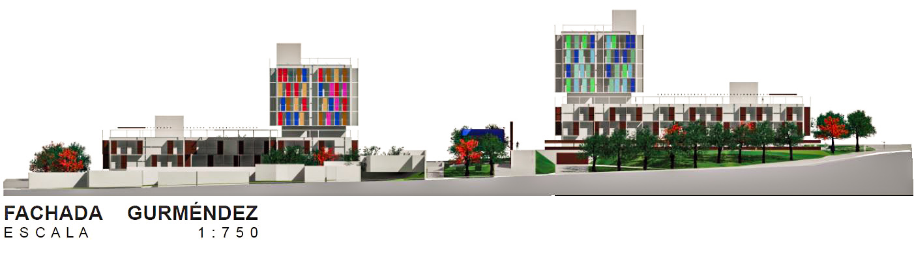
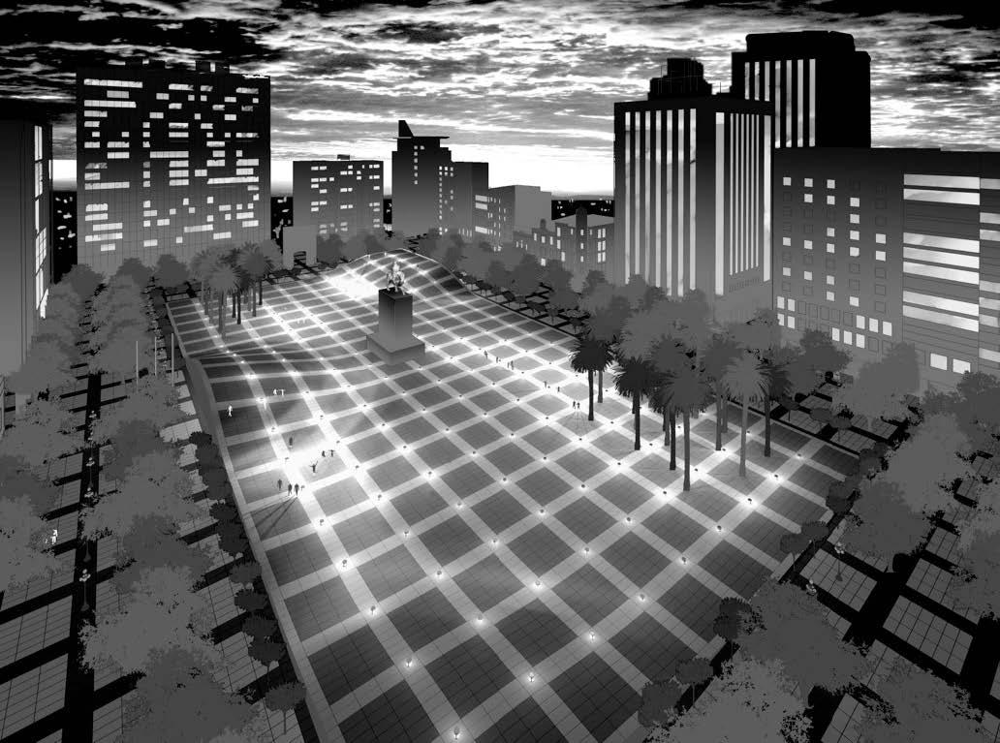
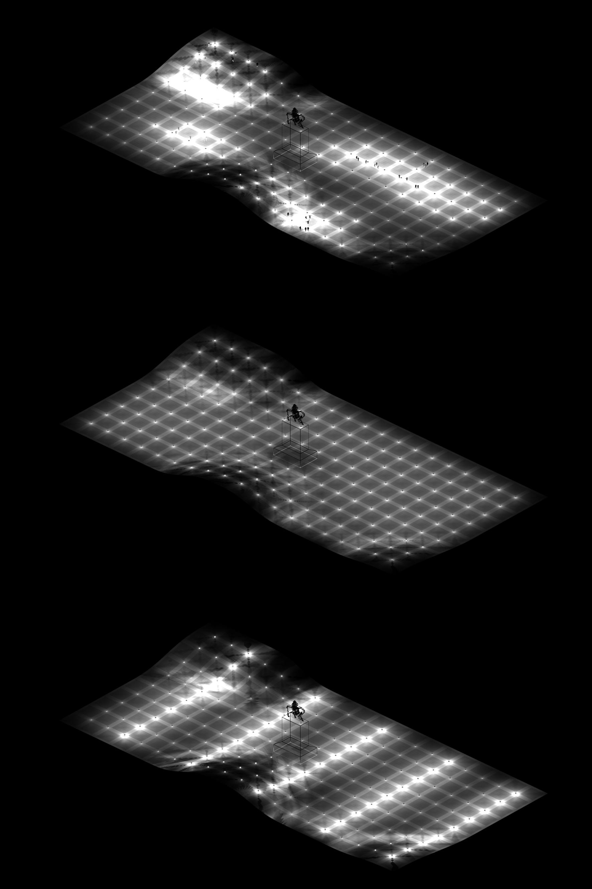
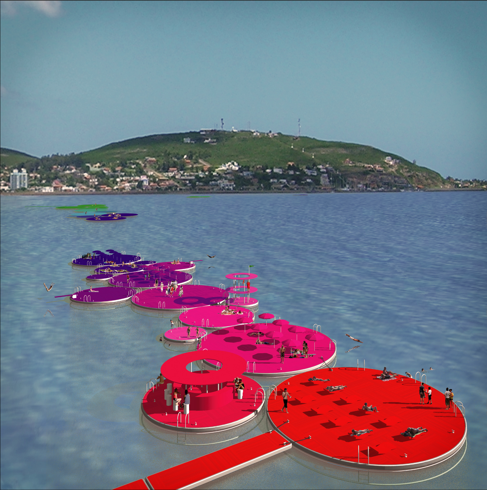
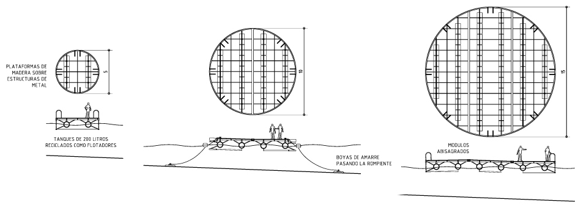

Extra Large

- 
Five Patios
Montevideo, Uruguay
This proposal articulates the site on three levels: First, on a local scale with 9 m (30') tall buildings with deep facades revolving around 5 patios that respect the size and configuration of the adjacent constructions. Second, on a neighborhood scale with a large central plaza designed to become the heart of the area. And finally, on an urban scale with 8-floor towers that pay tribute to the history of the site through a color-coded facade treatment.
Entry for the Ex-Raincoop Housing Competition, 2017
Design Team: Alvaro Bonfiglio & Pablo Bonfiglio
- 
- 
Programmable Cityscape
Montevideo, Uruguay
The square is conceived as a digital peneplain, a symbol that synthesizes the contemporary IT development of Uruguay with its traditional geography.
A ubiquitous array of intelligent lamps follows the rolling hills of the artificial landscape, creating a responsive and programmable cityscape.
The lighting system can be set to follow three different patterns: responsive, homogeneous and programmable. In the last option, users can propose their own personal sequence through an Internet-accessible interface (thus accessible on site via smart-phone).
Entry for the "Plaza Independencia" Urban Redevelopment Competition, 2010
Design Team:
Bonfiglio+Estudio ACM: Alvaro Bonfiglio, Beatriz Arpayoglou, Jose Manggiarotti, Santiago Cassanello, Teresita Bardier
- 
- 
Floating Dunes
Piriápolis, Uruguay
Private and public agents interact as in a dynamic system. The proposed flexible infrastructure of land-discs and water-discs accepts and intensifies the dynamic nature of this interaction, easily adapting itself to the flows of the summer season.
While land-discs are surfaces of ceramic pavement arranged in the public space, water-discs are wooden platforms on floating, metallic structures. Groups of water-discs conform the floating dunes. The agents of the system (public and private) operate within these spatial boundaries according to a coordinated schedule. When a group of activities is identified, it is combined in clusters or molecular clouds, accepting urban tensions as regulatory frame.
The interruption of the dune by the waterfront avenue is reportedly the main reason for the lack of natural sand in the beach of Piriápolis. The existing jetties and the future construction of an artificial reef are restorative solutions that will undoubtedly modify the seashore. Floating Dunes intensify the action over the landscape, but without generating irreversible solutions.
Entry for the Piriápolis Coastline Ideas Competition, 2008
Design Team: Alvaro Bonfiglio & Teresita Bardier
Semiconductors

Tokyo, Japan
In the last decades, research into the sub- atomic levels of physical chemistry received all the attention and enormous amounts of founding from governments and institutions. In this direction new theories had to be formulated and new experiments had to be developed in order to cope with this fast-paced development. In spite of that, the technological progress that we enjoy nowadays is based in bigger and much simpler scale of work: microscopic and atomic levels. Now, semiconductors allow us to use computers, and neither cyclotrons nor new interpretations of the cosmos were required for this development. Similarly, this proposal is a research into already known areas of the architectural field, but as revolutionary and challenging as semiconductor technology.
This is a three-dimensional intersection of 2 (ever) conflicting spheres of human activity: private and public space. The vertical axis is a gradient from intimate to public: the private areas and private walled garden are at the basement level, the access and the web of vehicular communication is at ground level and the community garden is at roof level. Private spaces are also arranged according to intimacy requirements, from the toilet (most intimate) to the home office or the living / playroom. The four houses have the least intimate area located on the ground floor and visible from the street level, while the private areas are located on the basement level, related to a walled private garden and protected from neighbors’ sight lines. The public sphere has also two levels, with the vehicular streets at ground level and the community garden at roof level.
These different spaces, public and private are generated, divided, connected, conformed and qualified by a brick wall, as a semiconductor that manages the flow of human energy.
Entry for Shinkenchiku Residential Design Competition, 2008
Port City
Canary Islands, Spain
Organized as a series of “puddles”, the new areas of the harbor prepare the city for a multiplicity of new uses; many of them still to be determined by the future development of the islands.
This proposal was developed as a professional remote collaboration. The team was geographically distributed between Spain and Japan.
Entry for Arrecife Port - City International Ideas Competition, 2005
Design Team: Jin Taira, Alvaro Bonfiglio